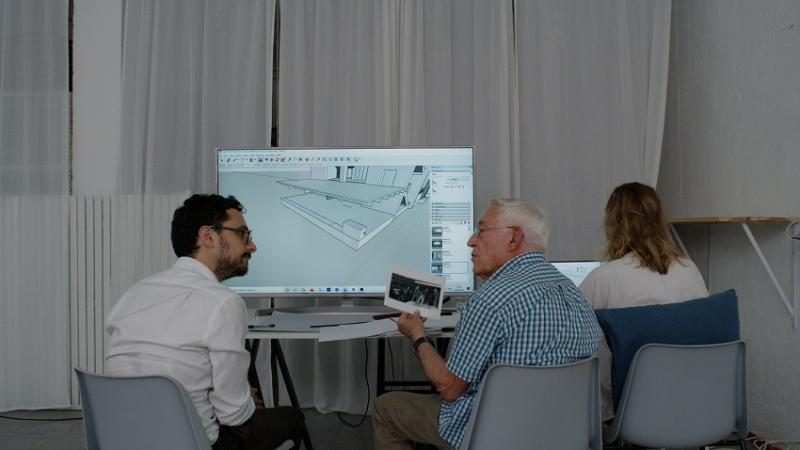

Atlas of Disappearance | Digital Memory Platform (ongoing)
2023 – Present
Digital Platform
Historical Memory
Information Design
Atlas of Disappearance (Atlas de la Desaparición) is an experimental digital platform that gathers stories and archives of forced disappearances carried out under the Franco regime — specifically the transfer of bodies into El Valle de Cuelgamuros (antes llamado Valle de los Caídos).
The project is led by Oficina de Investigación Documental, a transdisciplinary research collective of geographers, filmmakers, architects, and artists. I am a member of the collective, contributing to the design of the web platform that will make this research publicly navigable.
A companion documentary by Manuel Correa was recently reviewed in The Guardian. It premiered at CPH:DOX and has been awarded at DocsBarcelona and Documenta Madrid. The full platform is expected to launch by the end of 2026.

My Work
Platform design
Shaping how fragmented archives, geographic research, and family testimonies become a digital museum, so visitors can encounter disappearance stories without losing the complexity that makes them hard to tell.
Information architecture
Working with OID researchers to structure search, place-based narratives, and evidence layers for a public audience, families, researchers, and anyone seeking a shared factual record.
Collaborative process
Designing inside a transdisciplinary team where forensic mapping, film, and archival research meet design decisions, keeping care for victims and relatives at the centre of the interface.
Work in progress. The full platform is expected to launch by the end of 2026.
👀